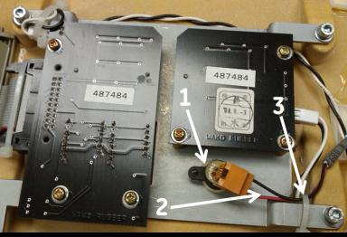
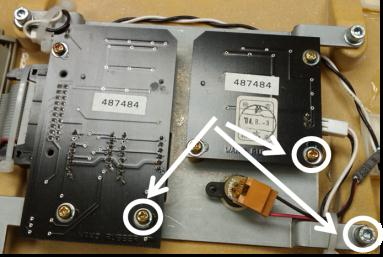
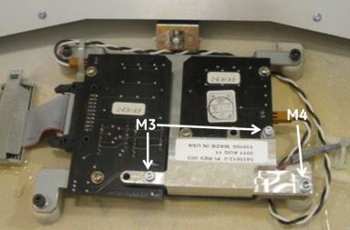
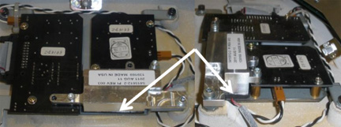
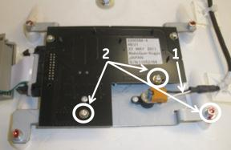
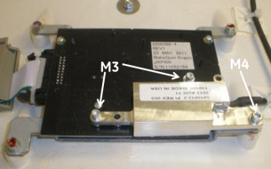
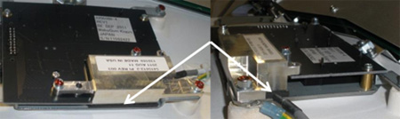
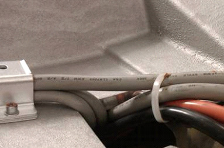

Operating Documentation
Direction 5193574-800, Rev# 22
LightSpeed 7.X Service Methods
Module Version 1.0, Version Date 2/23/12
Operating Documentation |
| Required Persons | Preliminary Reqs | Procedure | Finalization |
|---|---|---|---|
| 1 | n/a | 45 minutes | 15 minutes |
This document provides details for installing/replacing the microphone cover. The acoustics on certain sites make the microphone (on the breathing light assembly) more susceptible to gantry background noise. If a site is having difficulties hearing the patient through the intercom due to gantry background noise, then refer to the procedure below to install the microphone cover for noise suppression.
The Microphone Cover (see Section 3.3) is 3mm thick Aluminum with a foam gasket, designed to seal the gantry noise from the microphone. It will fit on both VCT and HD systems. The kit contains two covers, one for the front and one for the back Breathing Light Assembly. Depending on the Breathing Light Assembly on the system (either 2200386-3 or 2200386-4), different mounting holes will be used. Refer to Section 4 for installation procedure.
| Item | Qty | Effectivity | Part# | Manufacturer | |
|---|---|---|---|---|---|
| Standard FE Toolkit | 1 | - | - | - | |
| Item | Qty | Effectivity | Part# | Manufacturer |
|---|---|---|---|---|
| Tie-wraps | AR | - | - | - |
| Item | Qty | Effectivity | Part# | Manufacturer | |
|---|---|---|---|---|---|
| VCT Breathing Light Cover | 1 | - | - | - | |
| ||||
| Follow all required safety and PPE procedures customary for your organization when working on this product. | ||||
| Condition | Reference | Effectivity |
|---|---|---|
Only trained service personnel should service the GE CT Scanner | - | - |
Move table cradle all the way out of gantry.
Remove gantry side and top covers.
Turn OFF [120VAC], [HVDC ENABLE] and [AXIAL DRIVE ENABLE] switches on the Service Switch Panel.
Remove gantry front cover.
Locate Breathing Light Assembly (inside front cover, top middle) and identify the part number. If you have an older version, 2200386-3, proceed to Microphone Cover Installation on Breathing Light Assembly 2200386-3. Otherwise, for 2200386-4 versions, proceed to Microphone Cover installation on Breathing Light Assembly 2200386-4 .
| NOTE: | The older -3 breathing light assembly has two circuit boards while the newer -4 version has a single circuit board. See Illustration 1 and Illustration 2. |
Illustration 1: Breathing Light 2200386-3

Illustration 2: Breathing Light 2200386-4

Ensure the microphone and the wires (Item 1 and 2) are aligned to the side to make a good seal with the Microphone Cover; refer to Illustration 3. It may be necessary to cut the tie-wrap (Item 3) and install a new one after making the proper adjustment.
Illustration 3: Breathing Light Assembly 2200386-3

Remove the three screws and washers highlighted in Illustration 4 and discard. New hardware is included in the kit.
Illustration 4: Remove screws and washers

Using the hole locations from the previous step and Illustration 5, install the microphone cover with new hardware: Two M3 screws and washers and one M4 screw and washer. Ensure the cover makes a good seal with the breathing light assembly mounting plate (see Illustration 6).
Illustration 5: Installed Microphone Cover

Illustration 6: Microphone cover Seal

Remove Gantry Back Cover and repeat Steps 1-3 in Microphone Cover Installation on Breathing Light Assembly 2200386-3 to install the other microphone cover.
Proceed to Post-Installation Inspections.
Ensure the microphone and the wires (Item 1) are aligned to the side to make a good seal with the Microphone Cover; refer to Illustration 7. It may be necessary to cut the tie-wrap and install a new one after making the proper adjustment.
Remove the three screws and washers (Item 2 in Illustration 7) and discard. New hardware is provided in the kit.
Illustration 7: Breathing Light Assembly 2200386-4

Install the microphone cover with new hardware: Two M3 screws and washers and one M4 screw and washers. Ensure the cover makes a good seal with the breathing light assembly mounting plate, see Illustration 8 and Illustration 9.
Illustration 8: Installed Microphone Cover

Illustration 9: Microphone Cover Seal

Remove Gantry Back Cover and repeat Steps 1-3 in Microphone Cover installation on Breathing Light Assembly 2200386-4 to install the other microphone cover.
Proceed to Post-Installation Inspections.
Inspect for any cables and wires that could stick up off of the rotating gantry and interfere with the microphone cover. If any cables seem to be sticking up, similar to Illustration 10, cut the tie-wrap, adjust the cables to fit into the cable routing and install new tie-wrap.
Illustration 10: Cable Routing Adjustment on the back Rotating Gantry

| NOTE: | These cables should be in this tough. |
Re-install the Gantry front and back covers and manually rotate the gantry and inspect for any contact between the cover and the rotating gantry.
Turn ON [120VAC], [HVDC ENABLE], and [AXIAL DRIVE ENABLE] switches on the Service Switch Panel.
Open Axial Functionality (CSD - Diagnostics) and perform an axial rotation test at 2 sec/rev. While system gantry is rotating, listen for any noise indicating contact between microphone cover and rotating surface.
Perform an axial rotation test at a higher speed (e.g., 0.5 sec/rev). During axial rotation test, activate the speaker on the SCIM and listen to the audio coming from the gantry. Ensure background noise has decreased (may need to adjust for better seal between microphone cover and mounting plate).
Acquire a test scan and listen for audio quality improvement.